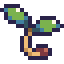
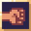

デバフ▼


だんじょん・ばとる ーぜんじつたんー の攻略サイトです。
ゲーム本編はコチラ 通常モード攻略はコチラ「ぜんじつたん」のプレイヤーキャラクター。魔物で溢れるだんじょんの噂を聞きつけ、制圧に向かう。
元アパート。
ある日"魔女"が闇の儀式で魔界のゲートを開き、魔物だらけの危険なだんじょんと化してしまった。
敵が立ちはだかる！ばとるで蹴散らせ！
ジェムパワーを授かれる。以下の3つから1つだけ選択。
商人の弟子が経営するショップ。お金を払ってまほうやどうぐを購入できる。
ゲーム中では特に言及されていないデータたち。
| アイコン | バフ△ デバフ▼ |
効果 |
|---|---|---|
| △ | 次のX回の攻撃（なぐる）の威力は2倍。 | |
| △ | Xターンの間、攻撃（なぐる）の威力が2倍。 | |
| △ | 戦闘中、攻撃（なぐる）の威力がX増加。 | |
| △ | Xターンの間、攻撃（なぐる）から受けるダメージを半分にする。 | |
| △ | Xターンの間、まほうから受けるダメージを半分にする。 | |
|
△ | Xターンの間、受けるダメージを1/4にする。 |
| △ | Xターンの間、受けるダメージを1に軽減する。 | |
|
△ | Xターンの間、最大HPの20%を回復。 |
| △ | 次のターン開始時、XとXを自身に付与。 | |
| △ | X=3のとき、を全て取り除き、相手に100の固定ダメージを与える。 | |
| △ | Xを持つ敵を倒したとき、商人はMPをX獲得する。 | |
| ▼ | 次のX回の攻撃（なぐる）の威力は2分の1。 | |
| ▼ | Xターンの間、受けるダメージが1.5倍。 | |
| ▼ | 攻撃（なぐる）されたとき、攻撃したキャラクターは与えたダメージ分回復する。X回有効。 | |
|
▼ | Xターンの間、まほうを使用できない。 |
| ▼ | Xターンの間、どうぐを使用できない。 | |
| ▼ | まほうの消費MPがX増加。 |
| 名前 | 画像 | 消費MP | 一度きり | ダメージ | 追加効果など |
|---|---|---|---|---|---|
| フレイム | 3 | Lv×2+8 | |||
| オシマイ | 0 | ◯ | Lv×2+20 | 現在MPが0のとき。さらにMPを5-10獲得。 | |
| 1 | 現在MPが1以上のとき。 | ||||
| モノナゲ | 3 | 所持どうぐ数×5 | |||
| ドロボー | 1 | ◯ | (Lv+5) | 「なぐる」と同じ効果に加え、10ダメージ以上与えるとどうぐを1つ獲得する。 | |
| ホショク | 5 | 7（固定） | これで倒すと最大HPの25%を回復、最大HP+5。 | ||
| ハイスイ | 8 | 商人のHP減少量 |
| 名前 | 画像 | 消費MP | 一度きり | 効果 |
|---|---|---|---|---|
| プラント | 3 | 敵に2を付与。 | ||
| ヨワヨワ | 4 | 敵に4を付与。 | ||
| ボウギョ | 1 | 商人に1を付与。 |
||
| プンスカ | 2 | 商人に5を付与。 | ||
| ハンブン | 3 | ◯ | 商人と敵のHPを最大HPの半分にする。 | |
| チャージ | 0 | ◯ | MP+4。 |
| 名前 | 画像 | 戦闘外での使用 | 効果 |
|---|---|---|---|
| ばなーな | ○ | 最大HPの50%を回復する。HPが満タンの時に使うと最大HP＋6。 | |
| どりんく |  |
× | 商人に3を付与。 |
| つーぱい | × | 商人に1を付与。3を得たとき、敵に固定100ダメージ。 | |
| ひとだま | × | 商人に1を付与。 | |
| はぐるま | × | 商人に付与されているデバフを全て取り除く。 | |
| やどりぎ |  | × | 敵に4を付与。 |
だんじょんに住まう敵の一覧。
2体でひとつの不定形生物。上は攻撃担当で下は土台担当（交代制）。
ラズベリー味。
| 連携ワザ | 3ダメージを与え、商人に1を付与。 | 1/2の確率で使用。連続で使用しない。 |
| 攻撃 | 6ダメージを与える。 |
ちびゴブたちに慕われる親分。
図体はデカいが器は小さい。
| 怒り | 自身に55を付与。 | 自身のHPが減少したとき、一度だけ使用。 |
| 突進 | 3ダメージを与え、商人に2を付与。 | 1/3の確率で使用。 |
| 攻撃 | 5ダメージを与える。 |
魔女のお気に入りのおもちゃ。
まほうが染み付いている。
| ぶつりブロック | 3-4ダメージを与え、自身に1を付与。 | 最初のターン、1/2の確率で使用。 「まほうブロック」の次に使用。 |
| まほうブロック | 3-4ダメージを与え、自身に1を付与。 | 最初のターン、1/2の確率で使用。 「ぶつりブロック」の次に使用。 |
まほうを浴びて魔物になった普通の蛇。
実は元ペットで、頭の帽子は飼い主の手作り。
| 巻きつき | 商人に2-4を付与。 | 1ターン目に使用。 |
| 脱皮 | 自身のHPを5回復する。 | 3の倍数ターン目に使用。 |
| 噛みつき | 5-8ダメージを与える。 |
闇の儀式に巻き込まれた人間の成れの果て。
生前から影が薄かったため、姿を消すのが得意。
| 姿を消す | 自身に1を付与。 | 2ターン目に使用。 以降3ターンごとに使用。 |
| 攻撃 | 6-10ダメージを与える。 |
魔界道路法第45条および魔界道路交通法第4条に基づいて設置されている、最新型の道路標識。
指示に従わない車をまほうで破壊する。
| 矢印ばら撒き | 商人にXとX+2を付与。
自身にYとY+2を付与。 |
1ターン目に使用。 X,Yの値は2または3。 |
| 停止命令 | 商人に2を付与。 |
1/3の確率で使用。以降4ターン使用しない。 |
| 攻撃 | 9ダメージを与える。 |
葉の一部が矛のように進化した植物。
攻撃的で非常に危険だが、花はアクセサリーとして重宝される。
| 寄生 | 商人に2を付与。 | 商人にが無いとき、50%の確率で使用。 2回しか使わない。 |
| 攻撃 | 2X+4ダメージを与える。 | Xは「攻撃」の使用回数に等しい。 ただし16ダメージを超えない。 |
全ての不定形生物を統べる王。メロンソーダ味。
| ベトベト散布 | 商人に4を付与。 | 1ターン目に使用。 |
| ベトベトアタック | 4ダメージを与える。 商人に1を付与。 |
1/2の確率で使用。以降2ターン使用しない。 |
| 攻撃 | 6-9ダメージを与える。 |
魔界で普及している二足歩行型Wi-Fiルーター。
半径5m以内での通信速度：下り20kbps/上り5kbps
| トラブルシューティング | 何もしない。 | 自身のHPが50%以上で、デバフを付与されたときに使用。 |
| 自己修復 | 自身のデバフを全て解除。 | 「トラブルシューティング」の次のターン、自身のHPが50%以上なら使用。 |
| 攻撃 | 8ダメージを与える。 | 自身のHPが50%以上で、デバフを付与されていないときに使用。 |
| 自爆カウントダウン | 何もしない。 | 自身のHPが50%未満になったとき、3ターン続けて使用。 |
| 自爆 | 商人に50ダメージを与える。 自身のHPを0にする。 |
「自爆カウントダウン」を3回発動した次のターンに使用。 |
魔界のジャングルに生息するヒルの仲間。
血の代わりにMPという謎の概念を吸い取る。
| MPドレイン | 6ダメージを与える。
商人のMP-3。 減らしたMPに等しいを得る。 |
1-3ターン目のいずれかで使用。 以降3ターンごとに使用。 |
| 防御体勢 | 自身に11を付与。 | MPドレインの直前のターンに1/2の確率で使用。 |
| 攻撃 | 12ダメージを与える。 |
魔女のペット。
行く先々で人々をたぶらかすので、飼い主も手を焼いているようだ。
| 毛づくろい | 自身に2を付与。 |
4・8回目の行動で必ず使用。 |
| あまえる | 商人に31を付与。 | 1/3の確率で使用。以降2ターン使用しない。 |
| 引っ掻く | 8-10ダメージを与える。 |
だんじょんの至る所に設置された監視装置。
不気味な見た目は魔女の趣味。
| 凝視 | 商人に2を付与。 | 1ターン目に使用。 |
| 目を瞑る | 自身に1を付与。 |
3の倍数ターン目に使用。 |
| 攻撃 | 10-12ダメージを与える。 |
魔女のボディガード兼お世話係。魔界出身。
謎の侵入者から魔女を守るべく、戦いを挑んでくる。
「ここから先には行かせない！」
| 防御まほう | 自身に22を付与。
1を失う。 |
HPが50%以上のとき、3の倍数ターン目に1/2の確率で使用。 |
| 脱力まほう | 商人に2を付与。
2を失う。 |
HPが50%以上のとき、3の倍数ターン目に1/2の確率で使用。 |
| 威圧 | 商人に21を付与。 | HPが50%未満になったとき、一度だけ使用。 |
| 攻撃まほう | 自身に2を付与。
3を失う。 |
威圧の2ターン後に使用。以降3ターンごとに使用。 |
| なぐる | 12ダメージを与える。 1を得る。 |
上のいずれにも当てはまらないターンに使用。 闘士のが不足している場合もこの行動をおこなう。 |
闇の儀式でだんじょんを築き上げた本作の黒幕。
元は魔界の良家のお嬢様。ちょっとした事件を起こして魔界を追い出され、地球に生活の拠点を作ろうとしていた。
「邪魔しないで！」
| 待機 | 何もしない。 | HPが満タンのとき、2回まで使用。 |
| 戦闘態勢 | グラフィックが変化する。 攻撃は行わない。 |
3ターン目までにダメージを受けたときに使用。 HPが満タンでも3ターン目に使用。 |
| 攻撃+まほうシールド | 8-12ダメージを与える。 自身に1を付与。 |
戦闘態勢突入後、最初のターンに使用。 以降2ターンごとに使用。 |
| 攻撃+ぶつりシールド | 8-12ダメージを与える。 自身に1を付与。 |
戦闘態勢突入後、2ターン目に使用。 以降2ターンごとに使用。 |
| 怒りの復活 | 自身のHPを完全に回復する。 自身に 2を付与。 |
自身のHPが0になったとき使用。 以降は復活後の行動パターンになる。 |
| (アルティメット・)シールドバッシュ | 25ダメージを与える。 | 復活後最初の行動で使用。 気合い溜めの次に使用。 |
| 脱力まほう | 商人に1を付与。 | (アルティメット・)シールドバッシュの次に使用。 |
| 気合溜め | 自身に111を付与。 | 脱力まほうの次に使用。 |
| 名前 | 画像 | 獲得方法 | 獲得のコツ |
|---|---|---|---|
| 新たな弟子 | 闘士を倒す。 | ||
| だんじょん制圧！ | 「ぜんじつたん」をクリアする。 | ||
| 脳筋 |  | 「なぐる」1回で50ダメージ以上与える。 | 「プンスカ」「ヨワヨワ」「どりんく」で「なぐる」の威力を高めよう。 「サインズ」との戦闘でを打ち消すのも有効。 |
| 寄生生物 | 「寄生」効果で敵1体から100HP以上吸収する。 | を付与する「やどりぎ」「プラント」を活用しよう。 HPが高い敵との戦闘で狙うべし。 |
|
| 収集家 | 「どうぐ」を一度に10個以上所持する。 | ジェムの「くらふと」やショップでどうぐを仕入れよう。 「ドロボー」があると狙いやすい。 |
|
| 3ターンクッキング | 3Fの敵を3ターン以内に倒す。 | 「ばけねこ」を「つーぱい」で吹き飛ばすのが最も確実。 威力を高めた「ハイスイ」「モノナゲ」も有効。 |
|
| 余裕のよっちゃん | HPを50%以上残してラスボスを撃破する。 | を付与し続けたり、「ボウギョ」「ひとだま」等でHPを温存しよう。 | |
| 本当にオシマイ | ラスボスを「オシマイ」で撃破する。 | もちろん「オシマイ」必須。「ボウギョ」があるとMP調整が容易。 | |
| おばけなんてないさ | 姿が見えない状態の「ゆうれい」を倒す。 | 「ホショク」「つーぱい」はを無視してダメージを与えられる。 | |
| お腹いっぱい | 最大HPを120以上にする。 | 「ホショク」を有効活用しよう。 HP満タンの状態で「ばなーな」を食べても最大HPを増やせる。 |
|
| ミニマリスト | 4種類以下のまほうでクリアする。 | 攻撃・回復・防御をバランスよく採用しよう。 まほう同士の相性も考慮すべし。 |
|
| ？？？ | 他の実績を全て集める。 |